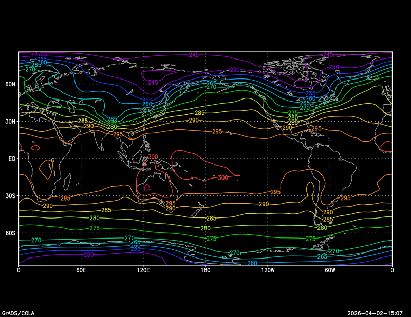
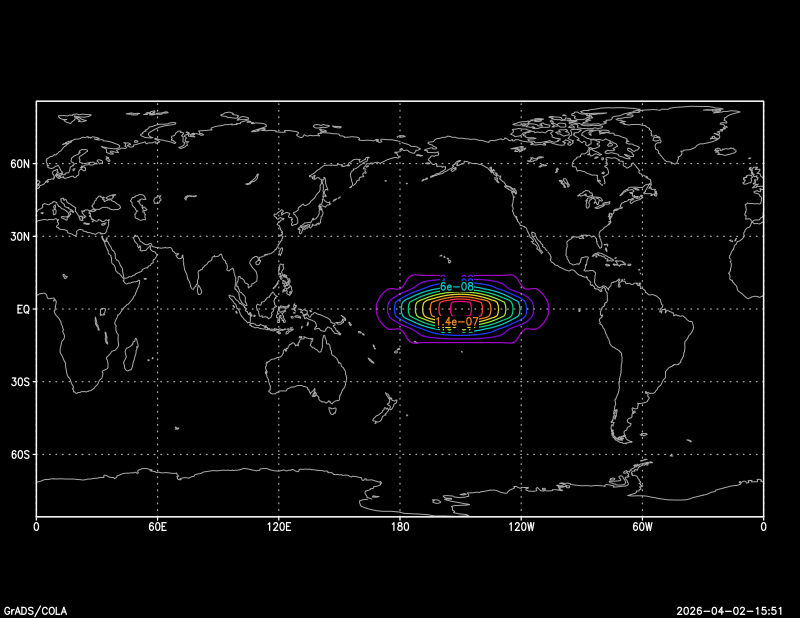
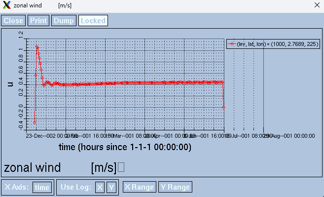

by Dong-Pha Dang (2026)
OPTIONS SEQUENTIAL YREV BIG_ENDIANsetenv LNHOME ~/LBM_install
setenv GFORTRAN_CONVERT_UNIT 'big_endian'###### Architecture ################
ARC = linux
###### Model type ################
### time-advance linear model (incl. storm track model)
PROJECT = tintgr
###### Horizontal Resolution ################
HRES = t21
###### Vertical Resolution ################
VRES = l20cd $LNHOME/model/src
make lib
make clean.special
make lbmYou should find a file called liblbm2t21ml11c.a under $LNHOME/model/lib/linux/ and lbm2.t21ml11ctintgr under $LNHOME/model/bin/linux/
cd $LNHOME
tar -xf ln_solver2.2.ncepdata.tar.gz&nmbs cbs0='/your_lbm/bs/gt3/ncepwin.t21l20',
cbs='/your_lbm/bs/grads/ncepwin.t21l20.grd'
&end
&nmncp cncep='/your_lbm/bs/ncep/ncep.clim.y58-97.t21.grd',
cncep2='/your_lbm/bs/ncep/ncep.clim.y58-97.ps.t21.grd',
calt='/your_lbm/bs/gt3/grz.t21',
kmo=12, navg=3, ozm=f, osw=f, ousez=t
cd $LNHOME/solver/util
make clean
makencepsbs### start making basic state ###
... selected month from: 12 ...
... number of month averaged: 3 ...
@@ Input :
/home/pdang/LBM_install/bs/ncep/ncep.clim.y58-97.t21.grd
@@ Input :
/home/pdang/LBM_install/bs/ncep/ncep.clim.y58-97.ps.t21.grd
@@ Output:
/home/pdang/LBM_install/bs/gt3/ncepwin.t21l20
@@ Output:
/home/pdang/LBM_install/bs/grads/ncepwin.t21l20.grd
... data read start ...
... month = 12
... month = 1
... month = 2
... data read end ...
... Z used for Ps ...
*** precision check .. 1.10000000000000
*** precision check .. 1.01000000000000
*** precision check .. 1.00100000000000
*** precision check .. 1.00010000000000
*** precision check .. 1.00001000000000
*** precision check .. 1.00000100000000
*** precision check .. 1.00000010000000
*** precision check .. 1.00000001000000
*** precision check .. 1.00000000100000
*** precision check .. 1.00000000010000
*** precision check .. 1.00000000001000
*** precision check .. 1.00000000000100
*** precision check .. 1.00000000000010
*** precision check .. 1.00000000000001
*** precision check .. 1.00000000000000
*** precision check .. 1.00000000000000
... spectral smoothing for Ps ...
@@@ DSPHE: SPHERICAL TRANSFORM INTFC. 93/12/07
... P( 17 ) --> S( 20 ) transform OK ...
... write basic state ...
... spectral smoothing for U ...
... U ...
... spectral smoothing for V ...
... V ...
... spectral smoothing for T ...
... T ...
... Ps ...
... spectral smoothing for Q ...
... Q ...
... end execution ...

A sample forcing mimiced the diabatic heating associated with El Niño is formulated as following. You can edit the parameters in the SETPAR file and generate the forcing fields using the utility mkfrcng. For example, if you want to generate a forcing with the same pattern but different amplitude, you can change the "hamp" parameter and run mkfrcng again.
&nmvar ovor=f, odiv=f, otmp=t, ops=f, osph=f
&end
&nmhpr khpr=1,
hamp=1.,
xdil=40.,
ydil=12.,
xcnt=210.,
ycnt=0.
&end
&nmvpr kvpr=2,
vamp=8,
vdil=20.,
vcnt=0.45
&endThe output should be like this
### MAKE FORCING MATRIX ###
*** precision check .. 1.10000000000000
*** precision check .. 1.01000000000000
*** precision check .. 1.00100000000000
*** precision check .. 1.00010000000000
*** precision check .. 1.00001000000000
*** precision check .. 1.00000100000000
*** precision check .. 1.00000010000000
*** precision check .. 1.00000001000000
*** precision check .. 1.00000000100000
*** precision check .. 1.00000000010000
*** precision check .. 1.00000000001000
*** precision check .. 1.00000000000100
*** precision check .. 1.00000000000010
*** precision check .. 1.00000000000001
*** precision check .. 1.00000000000000
*** precision check .. 1.00000000000000
................
Selected shape:
Horizontal:Elliptic
Vertical :Gamma
................
Matrix file :
/home/pdang/LBM_install/data/frc/frc.mat
Matrix file (GrADS) :
/home/pdang/LBM_install/data/frc/frc.grd
................
*** precision check .. 1.10000000000000
*** precision check .. 1.01000000000000
*** precision check .. 1.00100000000000
*** precision check .. 1.00010000000000
*** precision check .. 1.00001000000000
*** precision check .. 1.00000100000000
*** precision check .. 1.00000010000000
*** precision check .. 1.00000001000000
*** precision check .. 1.00000000100000
*** precision check .. 1.00000000010000
*** precision check .. 1.00000000001000
*** precision check .. 1.00000000000100
*** precision check .. 1.00000000000010
*** precision check .. 1.00000000000001
*** precision check .. 1.00000000000000
*** precision check .. 1.00000000000000
### check SUMGW = 0.999999999999985
Set vertical shape
................
Set horizontal shape
................
Written to GrADS file
................
Written to matrix file (all)
................
### END OF EXECUTION ###
You may find the generated forcing files in the directory specified "cfg" in the SETPAR file. With the sample ctl file, the figure below shows the horizontal structure of the forcing at the surface level.
* sample forcing pattern
DSET ^frc.grd
* BYTESWAPPED
OPTIONS SEQUENTIAL YREV BIG_ENDIAN
TITLE dumy
UNDEF -999.
XDEF 64 LINEAR 0. 5.625
YDEF 32 LEVELS -85.761 -80.269 -74.745 -69.213 -63.679 -58.143 -52.607
-47.070 -41.532 -35.995 -30.458 -24.920 -19.382 -13.844 -8.3067 -2.7689
2.7689 8.3067 13.844 19.382 24.920 30.458 35.995 41.532 47.070 52.607
58.143 63.679 69.213 74.745 80.269 85.761
ZDEF 20 LEVELS 0.99500 0.97999 0.94995 0.89988 0.82977 0.74468
0.64954 0.54946 0.45447 0.36948 0.29450 0.22953 0.17457 0.12440
0.0846830 0.0598005 0.0449337 0.0349146 0.0248800 0.00829901
TDEF 1 LINEAR 15jan0000 1mo
VARS 4
v 20 99 vor. forcing [s**-2]
d 20 99 div. forcing [s**-2]
t 20 99 temp. forcing [K s**-1]
p 1 99 sfc.Ln(Ps) forcing
ENDVARS
cd $LNHOME/model/sh/tintgr
cp linear-run.classic.csh linear-run.test.csh
Edit linear-run.test.csh
Sample linear-run.test.csh
#!/bin/csh -f
#
# sample script for linear model run (dry model)
#
# NQS command for mail
#@$-q b
#@$-N 1
#@$-me
#
setenv LBMDIR $LNHOME/model # ROOT of LBM
setenv SYSTEM linux # execute system
setenv RUN $LBMDIR/bin/$SYSTEM/lbm2.t21ml20ctintgr # Excutable file
setenv TDIR $LNHOME/solver/util
#setenv FDIR $LNHOME/data # Directory for Output
setenv FDIR $LNHOME/data/ # Directory for Output
setenv DIR $LNHOME/data/out # Directory for Output
setenv BSFILE $LNHOME/bs/gt3/ncepwin.t21l20 # Atm. BS File
#setenv BSFILE $LNHOME/bs/gt3/erawin.t21l20 # Atm. BS File
setenv RSTFILE $DIR/Restart.amat # Restart-Data File
#setenv FRC $FDIR/frc.t21l20.classic.grd # initial perturbation
#setenv SFRC $FDIR/frc.t21l20.classic.grd # steady forcing
setenv FRC $FDIR/frc/frc.grd # initial perturbation
setenv SFRC $FDIR/frc/frc.grd # steady forcing
setenv TRANS gt2gr
setenv TEND 200
#
#
if (! -e $DIR) mkdir -p $DIR
cd $DIR
\rm SYSOUT
echo job started at `date` > $DIR/SYSOUT
/bin/rm -f $DIR/SYSIN
#
# parameters
#
cat << END_OF_DATA >>! $DIR/SYSIN
&nmrun run='linear model' &end
&nmtime start=0,1,1,0,0,0, end=0,1,$TEND,0,0,0 &end
&nmhdif order=4, tefold=0.5, tunit='DAY' &end
&nmdelt delt=40, tunit='MIN', inistp=2 &end
&nmdamp ddragv=0.5,0.5,0.5,20.,20.,20.,20.,20.,20.,20.,20.,20.,20.,20.,20.,20.,20.,20.,1.,1.,
ddragd=0.5,0.5,0.5,20.,20.,20.,20.,20.,20.,20.,20.,20.,20.,20.,20.,20.,20.,20.,1.,1.,
ddragt=0.5,0.5,0.5,20.,20.,20.,20.,20.,20.,20.,20.,20.,20.,20.,20.,20.,20.,20.,1.,1.,
tunit='DAY' &end
&nminit file='$BSFILE' , DTBFR=0., DTAFTR=0., TUNIT='DAY' &end
&nmrstr file='$RSTFILE', tintv=1, tunit='MON', overwt=t &end
&nmvdif vdifv=1.d3,1.d3,1.d3,1.d3,1.d3,1.d3,1.d3,1.d3,1.d3,1.d3,1.d3,1.d3,1.d3,1.d3,1.d3,1.d3,1.d3,1.d3,1.d3,1.d3,
vdifd=1.d3,1.d3,1.d3,1.d3,1.d3,1.d3,1.d3,1.d3,1.d3,1.d3,1.d3,1.d3,1.d3,1.d3,1.d3,1.d3,1.d3,1.d3,1.d3,1.d3,
vdift=1.d3,1.d3,1.d3,1.d3,1.d3,1.d3,1.d3,1.d3,1.d3,1.d3,1.d3,1.d3,1.d3,1.d3,1.d3,1.d3,1.d3,1.d3,1.d3,1.d3, &end
&nmbtdif tdmpc=0. &end
&nmfrc ffrc='$FRC', oper=f, nfcs=1 &end
&nmsfrc fsfrc='$SFRC', ofrc=t, nsfcs=1, fsend=-1,1,30,0,0,0 &end
&nmchck ocheck=f, ockall=f &end
&nmdata item='GRZ', file='' &end
&nmhisd tintv=1, tavrg=1, tunit='DAY' &end
&nmhist item='PSI', file='psi', tintv=1, tavrg=1, tunit='DAY' &end
&nmhist item='CHI', file='chi', tintv=1, tavrg=1, tunit='DAY' &end
&nmhist item='U', file='u', tintv=1, tavrg=1, tunit='DAY' &end
&nmhist item='V', file='v', tintv=1, tavrg=1, tunit='DAY' &end
&nmhist item='OMGF', file='w', tintv=1, tavrg=1, tunit='DAY' &end
&nmhist item='T', file='t', tintv=1, tavrg=1, tunit='DAY' &end
&nmhist item='Z', file='z', tintv=1, tavrg=1, tunit='DAY' &end
&nmhist item='PS', file='p', tintv=1, tavrg=1, tunit='DAY' &end
END_OF_DATA
#
# run
#
$RUN < $DIR/SYSIN >> $DIR/SYSOUT
#
cd $TDIR
$TRANS
echo job end at `date` >> $DIR/SYSOUT
tail -n 20 $DIR/SYSOUT
chmod u+x linear-run.test.csh
linear-run.test.cshIn SETPAR, "nmfgt" specifies the output directories. The first eight are the output directories for each variable and "cfo" is the output directory for the combined file.
&nmfgt cfs='/home/pdang/LBM_install/data/out/psi',
cfc='/home/pdang/LBM_install/data/out/chi',
cfu='/home/pdang/LBM_install/data/out/u',
cfv='/home/pdang/LBM_install/data/out/v',
cfw='/home/pdang/LBM_install/data/out/w',
cft='/home/pdang/LBM_install/data/out/t',
cfz='/home/pdang/LBM_install/data/out/z',
cfp='/home/pdang/LBM_install/data/out/p',
cfo='/home/pdang/LBM_install/data/linear.t21l20.grd',
fact=1.0,1.0,1.0,1.0,1.0,1.0,1.0,1.0,1.0,1.0,1.0,
opl=f,
&endWith the sample ctl file below, you can convert grd to netcdf using cdo
* sample file fot products of a linear integration
* dry LBM
DSET ^linear.t21l20.grd
OPTIONS SEQUENTIAL YREV BIG_ENDIAN
TITLE time-integration
UNDEF -999.
XDEF 64 LINEAR 0. 5.625
YDEF 32 LEVELS -85.761 -80.269 -74.745 -69.213 -63.679 -58.143 -52.607
-47.070 -41.532 -35.995 -30.458 -24.920 -19.382 -13.844 -8.3067 -2.7689
2.7689 8.3067 13.844 19.382 24.920 30.458 35.995 41.532 47.070 52.607
58.143 63.679 69.213 74.745 80.269 85.761
ZDEF 20 LEVELS 1000 950 900 850 700 600 500 400 300 250
200 150 100 70 50 30 20 10 7 5
TDEF 200 LINEAR 1jan0000 1dy
VARS 8
psi 20 99 stream function [m**2/s]
chi 20 99 velocity potential [m**2/s]
u 20 99 zonal wind [m/s]
v 20 99 meridional wind [m/s]
w 20 99 p-vertical velocity [hPa/s]
t 20 99 temperature [K]
z 20 99 geopotential height [m]
p 1 99 surface pressure [hPa]
ENDVARScd $LNHOME/solver/util
./gt2gr
cd $LNHOME/data
cdo -f nc import_binary linear.t21l20.ctl linear.t21l20.nc
For the dry model steady response, the output should be constant after a few weeks of integration. Below is an example of zonal wind anomaly near the equator. You can see the response to the forcing becomes stable after a few weeks.
